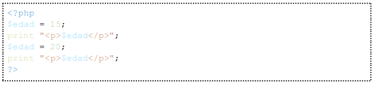
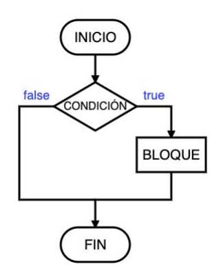

1. Usos de la etiqueta PHP
1.1 Fragmentos de PHP
");
echo "
Los fragmentos de PHP no pueden anidarse, es decir, no puede haber un fragmento dentro de otro";
?>
En este caso esta dentro del php"
?>
|
$saludo"; // Se escribe el valor de la variable
?>
|
Lo siguiente NO es correcto"
?>
el navegador lo que recibe unicamente es un HTML";
print "Aquí abajo un ejemplo de un fragmento de HTML y otro de PHP con HTML"
?>
|
Hola";
print " ¿Cómo estás? ";
print "Adios ";
?>
|
1.2. Delimitadores
");
print "Se deben utilizar los delemitadores ";
print htmlspecialchars("");
print "Ademas de que la directiva short_open_tag por defecto tiene el valor Off y produciria un error al utilizar los delimitadores abiertos"
?>
");
print " es una abreviatura del ";
print htmlspecialchars("")
?>
1.3. Diferencias entre echo y print
paréntesis al momento de llamarlas. Esta es la forma y tipo de cada uno:";
print "print imprime una cadena, echo puede imprimir más de una separadas por coma";
?>
|
Hola";
echo " Hola ", "Hola de nuevo ";
?>
|
1.4. print_r vs var_dump
Si el valor de la variable es una cadena de texto, var_dump imprime la cadena entre dobles comillas, print_r no.";
print "Sin embargo print_r puede devolver el resultado en lugar de imprimirlo si se proporciona el segundo parámetro como true"
?>
1.5. Comentarios en páginas PHP
";
print "// para comentar el resto de la línea (como en C++)
# para comentar el resto de la línea (como en la shell de Unix o en Perl)
/* */ para delimitar varias líneas (como en C)";
print "Aqui abajo un ejemplo"
?>
hay que utilizar la etiqueta de
comentarios de HTML ";
print htmlspecialchars(" ");
?>
2. Tipos de datos
2.1. Cadenas
IMPORTANTE!! No se pueden intercalar una simple y otra doble, eso dará error"
?>

2.1.1. Comillas dentro de cadenas
número de comillas simples, y viceversa."
?>
2.1.2. Diferencias entre comillas simples y dobles
(pero no siempre) si se utilizan comillas dobles, como se ve en el siguiente ejemplo"
?>
2.1.3. Comillas en código html / css
dobles. Los dos ejemplos siguientes producen código html válido:"
?>
3. Caracteres especiales
los nombres de variables empiezan por el carácter dólar ($). Cuando en una
cadena aparece una palabra que empieza por el carácter $, PHP entiende que esa
palabra hace referencia a una variable. Pero si a esa variable no se le ha dado valor
anteriormente, se producirá un aviso."
?>
|
Los nombres de variables empiezan por $. Por ejemplo
$edad.";
?>
|
el carácter contrabarra (\). El
ejemplo anterior quedaría por tanto";
?>
|
Los nombres de variables empiezan por $. Por ejemplo
\$edad.";
?>
|
3.1. Concatenar Caracteres
Aquí abajo el ejemplo"
?>
una cadena a otra y
asignarla a esta:"
?>
|
$cadena";;
$cadena .= "tiempos";
print " $cadena ";;
?>
|
4. Variables
información. Las variables se identifican por su nombre. Para facilitar la comprensión del
programa";
?>
4.1. Usos de las variables
izquierda únicamente el nombre de la variable y a la derecha el valor que queremos guardar.
Si queremos guardar un número, no hace falta poner comillas, pero si queremos guardar una
cadena de texto hay que poner comillas (dobles o simples)."
?>

|
$edad";
$edad = 20;
print " $edad ";
?>
|
4.2. Concatenar variables y cadenas
4.3. Variables en cadenas
4.3.1 Variables en cadenas numeros, cadenas, matrices de una dimension
|
El número $numero se escribe $seEscribe[0]: $texto";
?>
|
4.3.2 Variables en cadenas matrices de dos o más dimensiones
Como";
echo htmlspecialchars(" $ saludos[0]");
print "es una matriz de una dimensión, no puede escribir ningún valor y devuelve simplemente";
echo htmlspecialchars(" Array");
print ". A continuación, PHP añade el [1] que quedaba y se obtiene la cadena";
echo htmlspecialchars(" Array[1]");
print "Una solución a este problema es sacar la matriz de la cadena"
?>

|
¡" . $saludos[0][1] . ", $nombre! ¿Cómo está usted?";
?>
|
4.3.3 Nombre de Variables
variable por su valor, hay que escribir una contrabarra (\) antes de la variable"
?>
|
La variable \$x vale $x";
?>
|
4.3.4 Unir variables y texto
como en el ejemplo siguiente
en el que se establece el tamaño del párrafo en 30px:"
?>
|
Usted está autorizado.";
}
if ($autorizado == false) {
print " Usted no está autorizado. ";
}
?>
|
4.4.2. Variables enteras (integer)
|
Un cuadrado de lado $lado cm tiene un área de $area
cm2.";
?>
|
4.4.3. Variables decimales (float)
(positivos o
negativos). Como en las calculadoras, el separador de la parte entera y la parte decimal es el
punto (.), no la coma (,)."
?>
|
Un cuadrado de lado $lado cm tiene un área de $area
cm2.";
?>
|
4.4.4. Variables de cademas (string)
PHP no impone ningún límite al tamaño de las cadenas. Las cadenas pueden ser todo lo
largas que permita la memoria del servidor"
?>
|
$saludo";
$saludo[0] = "M";
print " $saludo ";
$saludo[14] = "n";
print "$saludo ";
?>
|
4.5. Variables predefinidas
";
print "$ _REQUEST es una matriz asociativa que contiene los datos enviados por los formularios y
las cookies guardadas en el ordenador del cliente.";
print "$ _SERVER es una matriz asociativa que contiene información sobre cabeceras, rutas y
ubicaciones de scripts suministrada por el servidor (pero hay que tener en cuenta que no
todos los servidores suministran todos los datos).";
print "$ _SERVER[PHP_SELF] contiene la dirección de la página (relativo a la raíz, es decir, sin el
nombre del servidor)."
?>
5. Constantes
puede modificar
a lo largo del programa. Las constantes pueden ser definidas por el programa o estar
predefinidas por el propio PHP o por algún módulo."
?>
|
El valor de pi es " . PI . "";
?>
|
5.1. Constantes Predefinidas
INF
La constante INF representa el infinito, es decir, cualquier número demasiado grande
(positivo o negativo) para poderse guardar en una variable decimal.";
print "PHP_INT_MAX
PHP_INT_MAX es el valor del mayor entero que se puede guardar en una variable de tipo
entero.
";
print "PHP_INT_SIZE
PHP_INT_SIZE es el tamaño en bytes de las variables de tipo entero, que depende del
ordenador, del sistema operativo y de la versión de PHP. En sistemas de 32 bits suele ser 4
bytes y en sistema de 64 bits suele ser 8 bytes.
";
?>
6. Operaciones aritméticas
operaciones fuera de las cadenas. En algunos casos no es necesario escribir las
operaciones entre paréntesis, pero se recomienda escribirlas";
?>
|
Suma: $x + $y = " . ($x + $y) . "";
print " Multiplicación: $x x $y = " . ($x * $y) . " ";
?>
|
7. Matrices (arrays)
simultáneamente varios datos
diferentes, a los que se accede mediante un índice, numérico o de texto"
?>
modificar,
eliminar o reordenar los elementos de forma individual. Además los elementos pueden ser
de tipos de datos diferentes."
?>
7.1. Creación de Matrices
Separandose por comas"
?>
que se
escriben entre corchetes ([ ]). Si al crear la matriz no se han indicado otros valores de
índices, el primer término tiene el índice [0], el segundo tiene el índice [1], etc.:"
?>
|
$nombres[1].";
print " $nombres[0]. ";
?>
|
7.2. Matrices asociativas
ser correlativos, ni siquiera tienen por qué ser números.
Al crear matrices asociativas, debemos indicar el valor de los índices, utilizando la notación"
?>
|
9, 5 => 25, 10 => 100];
print " El cuadrado de 3 es $cuadrados[3]";
?>
|
7.3. Matrices multidimensionales
matrices cuyos elementos son a su
vez matrices. Para referirse a los elementos concretos, se necesitan utilizar varios índices
(tantos como dimensiones -niveles de anidamiento- tenga la matriz).
"
?>
7.4. Imprimir todos los valores de una matriz (print_r)
La función print_r(";
echo htmlspecialchars(" $ variable [, ");
echo htmlspecialchars(" $ devolver]) ");
print " permite imprimir todos los valores de una matriz de forma estructurada. En general, print_r() imprime cualquier variable compuesta de forma legible"
?>
7.5. Añadir elementos a una matriz
o no el índice
del nuevo elementoSi no se indica el índice, el nuevo elemento toma como índice el siguiente al mayor
de los existentes (o el índice 0 si no había ningún valor numérico)"
?>
|
$nombres[1]";
print " $nombres[2] ";
?>
|
7.6. Unión de Matrices
de dos matrices. La unión
de dos matrices contiene todos los elementos de la primera matriz y únicamente los
elementos de la segunda matriz cuyo índice no se encuentra en la primera matriz."
?>
"Alba", 2 => "Bernardo"];
$nombres_2 = [1 => "Antonio", 3 => "Ana", 5 => "Carlos"];
print "" . print_r($nombres_1 + $nombres_2);
print "";
print "" .
print_r($nombres_2 + $nombres_1);
print "";
?>
|
8. Operadores
Los operadores aritméticos básicos son los siguientes:"
?>
8.1. Operadores de incremento y decremento
8.2. Resto de una división
|
El resto de 17 dividido entre 3 es " . 17 % 3 . "";
?>
|
8.3. Paréntesis
que en Matemáticas.
Concretamente, el orden de precedencia de los operadores comentados anteriormente es,
de mayor a menor"
?>
8.4. Operadores combinados
8.5. Redondear un número
La función round() se puede utilizar para verificar si un número es un número entero
(positivo o negativo), comprobando si un número coincide con su valor redondeado."
?>
|
$numero es un número entero";
} else {
print " $numero no es un número entero ";
}
$numero = -6;
if ($numero == round($numero)) {
print "$numero es un número entero ";
} else {
print "$numero no es un número entero ";
}
?>
|
La función round(x,n) redondea x con n decimales (si n es negativo redondea a decenas,
centenas, etc.).";
print "La función floor(x) redondea el número x al entero inferior (es decir, devuelve la parte
entera).";
print "La función ceil(x) redondea el número x al entero superior"
?>
8.6. Potencias
En PHP 5.6 se introdujo el operador **, equivalente a la función pow().
"
?>
|
23 = " . pow(2, 3) . "";
?>
|
8.7. Máximo y mínimo
respectivamente, de una lista
o matriz de valores.
"
?>
|
El mínimo es " . min(20, 40, 25.1, 14.7) . "";
?>
|
8.8. Formatear un número
es decir, una coma (,) para separar la parte entera de la decimal y un punto (.) para separar
las cifras de la parte entera en grupos de tres, se puede utilizar la función number_format()."
?>
|
" . number_format(1300, 5) . "";
?>
|
8.9. Números aleatorios
valores determinados, se pueden utilizar
la función rand() o la función mt_rand(). Ambas funciones requieren dos argumentos:
● El primer argumento es el valor mínimo que se quiere obtener
● El segundo argumento es el valor máximo que se quiere obtener.
"
?>
|
" . mt_rand(1, 6) . "";
print " " . mt_rand(1, 6) . " ";
print "" . mt_rand(1, 6) . " ";
?>
|
8.10. Operaciones lógicas
(verdadero o falso, en PHP, true o false). Estas expresiones se utilizan principalmente en las
estructuras de control."
?>
8.10.1. Comparaciones
sí o con valores
concretos. El resultado de la comparación es un valor booleano (true o false).
"
?>
Aqui un ejemplo de todos los que hay
|
Tu nombre es Juan.";
}
if ($nombre != "Juan") {
print " Tu nombre no es Juan. ";
}
?>
|
8.10.2. Operadores lógicos
9. Estructuras de Control
desde la primera instrucción
hasta la última y de una en una. Las estructuras de control permiten modificar este flujo,"
?>
9.1. Bloques de instrucciones
instrucciones que se
ejecutarán secuencialmente, utilizando las llaves { y }"
?>
|
Hola";
print " Adiós ";
}
?>
|
9.2. Sentencia condicional if... elseif... else...
de un bloque de
sentencias al cumplimiento de una condición";
print "if...La condición se evalúa siempre.
○ Si el resultado es true se ejecuta el bloque de sentencias
○ Si el resultado es false no se ejecuta el bloque de sentencias."
?>

if... else...La condición se evalúa siempre.
● La condición se evalúa siempre.
○ Si el resultado es true se ejecuta solamente el bloque de sentencias 1
○ Si el resultado es false se ejecuta solamente el bloque de sentencias 2."
?>
if... elseif... else...La condición se evalúa siempre.
● La condición 1 se evalúa siempre.
○ Si el resultado es true se ejecuta solamente el bloque_de_sentencias_1
○ Si el resultado es false se evalúa la condición 2.
■ Si el resultado es true se ejecuta solamente el bloque_de_sentencias_2
■ Si el resultado es false se ejecuta solamente el bloque_de_sentencias_3"
?>
9.3. Sentencia condicional switch
en las que las
expresiones son comparaciones de igualdad de la misma condición con valores distintos."
?>
9.4. Bucle for
● Se establece el valor inicial de la variable de control definida en la asignación inicial.
● Evalúa la condición de continuación:
○ Si el resultado es true se ejecuta el bloque de sentencias, se efectúa el
cambio de la variable de control y se evalúa nuevamente la condición de
continuación;
○ Si el resultado es false el bucle se termina.
";
print "La sintaxis del bucle for es la siguiente:";
?>
9.5. Contadores
de veces que se ha
cumplido una condición."
?>
|
Comienzo";
$cuenta = 0;
for ($i = 1; $i < 6; $i++ ) {
if ($i % 2 == 0) {
$cuenta += 1;
}
}
print " Desde 1 hasta 5 hay $cuenta múltiplos de 2. ";
print "Final ";
?>
|
9.6. Acumuladores
el resultado de una operación."
?>
|
Comienzo";
$suma = 0;
for ($i = 1; $i < 6; $i++ ) {
$suma += $i;
}
print " La suma de los números de 1 a 5 es $suma. ";
print "Final ";
?>
|
9.7. Bucles anidados
de sentencias de otro
bloque. Los bucles pueden tener cualquier nivel de anidamiento"
?>
9.8. Bucle while
si el resultado es true se ejecuta el
bloque de sentencias; si el resultado es false el bucle se termina."
?>
9.9. Bucle foreach
recorrer estructuras que contienen
varios elementos (como matrices, recursos u objetos)";
print "La ejecución de esta estructura de control es la siguiente:
● Si la matriz no contiene elementos, el bucle no se ejecuta.
● Si la matriz contiene elementos:
○ Se asigna el primer valor de la matriz a la variable auxiliar (y en su caso, el
primer índice a la otra variable auxiliar)
○ Se ejecuta el bloque de sentencias
○ Si la matriz no contiene más elementos, el bucle deja de ejecutarse.
○ Si la matriz todavía contiene más elementos:
■ Se asigna el siguiente valor de la matriz a la variable auxiliar (y en su
caso, el siguiente índice a la otra variable auxiliar)
■ Se ejecuta de nuevo el bloque de sentencias.
"
?>
"a", 2 => "bb", "tres" => "ccc"];
print "";
print_r($matriz);
print "";
foreach ($matriz as $indice => $valor) {
print "$indice - $valor ";;
}
print "Final ";
?>
|
 Manual PHP Iniciación
Manual PHP Iniciación